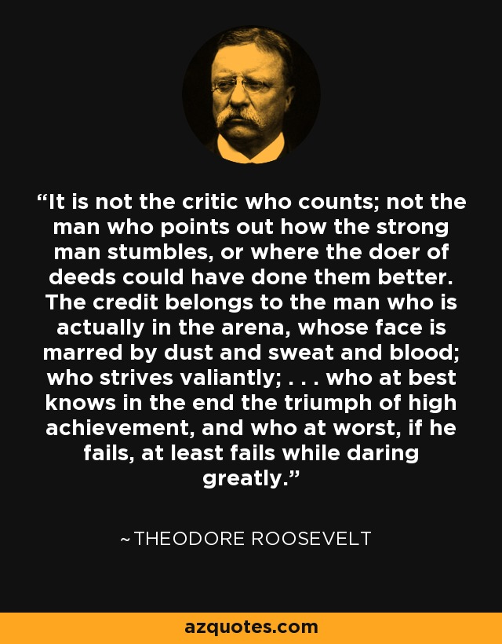

 " It is not the critic who counts: not the man who points out how the strong man stumbles or where the doer of deeds could have done better. The credit belongs to the man who is actually in the arena, whose face is marred by dust and sweat and blood, who strives valiantly, who errs and comes up short again and again, because there is no effort without error or shortcoming, but who knows the great enthusiasms, the great devotions, who spends himself in a worthy cause; who, at the best, knows, in the end, the triumph of high achievement, and who, at the worst, if he fails, at least he fails while daring greatly, so that his place shall never be with those cold and timid souls who knew neither victory nor defeat."

Theodore roosevelt 1910 © Copyright